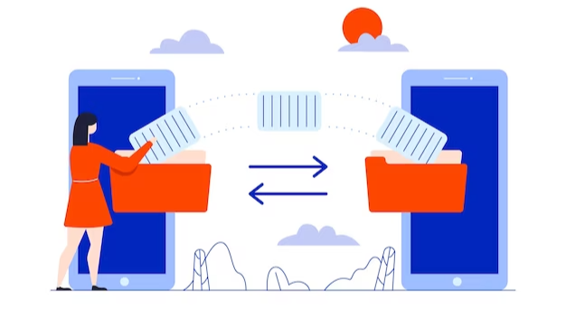

Skyrocket Productivity With Office 365 Migration!
As businesses move further towards digital transformation, an increasing number of organizations are starting to realize the numerous benefits of moving their email from on-premises solutions to cloud-based Office 365.
While the primary benefit of using Office 365 is the ability to access emails from anywhere, there are numerous hidden benefits that may not be immediately obvious. By making the switch to Office 365, businesses can greatly reduce their IT costs, increase employee productivity, and gain access to a range of advanced security tools. In this blog post, we'll take a look at how making the move to Office 365 can help businesses get the most out of their technology investments.
It is essential to have a reliable email system to promote beneficial communication aspects between your company and concentrate on areas like customer assistance, supplier contact, intra-business communication, and sending of invoices. If you fail to have this essential type of communication, your company could very well suffer.
Improvements in technology and improved email systems, including cloud computing using the Office 365 program from Microsoft, have replaced traditional on-premises Microsoft Exchange servers.
Here are the key benefits of Office 365 migration:
Enhanced accessibility from any place and at any time:
Office 365 enables you to access your email and other office apps remotely, even when you're away from your desk. Cloud hosting allows you to conveniently access your emails, files, and apps at your home or office, even when you're on the move.
You typically don't have to log in to a particular device to view your email securely. Use your computer, tablet, phone, or a smartwatch to view emails securely anywhere.
Save money on expenses using the pay-as-you-go pricing option:
Office 365 is the ideal platform for running cost-effective email solutions. With it, you pay as you go, which enables you to get more control over your services and more flexibility with their use.
You can also purchase as many licenses as you would like with the ability to scale up or scale down less complexly than with an on-premises server. This can help you save on substantial start-up expenses.
Updating backed up files automatically:
No one enjoys losing a file due to a lack of faith that it was immediately stored. This leads to wasted time and aggravation, along with having to write or create an additional one. Office 365 automatically backs up your files and keeps them continuously up to date, making sure the latest version of any file is stored and updated along with it.
Highly trusted sources and top-grade security:
Microsoft, a company famous for its technological applications, created the hosted service known as Office 365. The sheer amount of money that it was willing to spend in the creation of this service was notable.
On the Microsoft Office 365 platform, it guarantees that the email accounts have superior uptime, geo-redundancy, powerful security, and disaster recovery options.

Cooperation will enable better communication:
Misunderstandings can stop your business operations or entirely thwart their working. Export your emails from Gmail to Office 365 on your coworkers' computers to improve collaboration within your company network. Everyone has equal access to a document, so there are no misunderstandings or miscommunications.
Online Meetings:
Here is the age of online connections and conferencing apps. Office 365 tools provide excellent conferencing capabilities so that you could work together with your colleagues flawlessly, and record data.
If you haven't moved your email to Office 365 already, join the train! Don't let your competitors benefit from email migration as you watch. Find out more on the benefits of Office 365 email migration here.
To summarize, moving your email to Office 365 can be a great way to increase efficiency, reduce IT costs, and improve security. With the cloud-based hosted solution, you’ll have the latest features and updates and the ability to access your data from anywhere, anytime. Additionally, you’ll gain the reliability and scalability of the platform, giving you the space to grow without any additional hardware or infrastructure costs. All in all, Office 365 is an excellent choice for businesses that need an efficient and secure email solution.